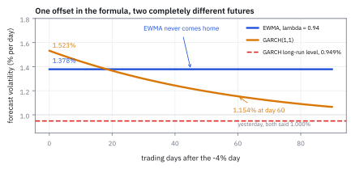
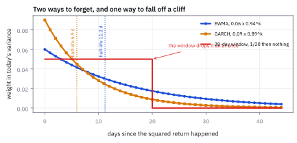
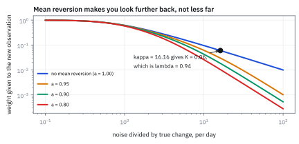
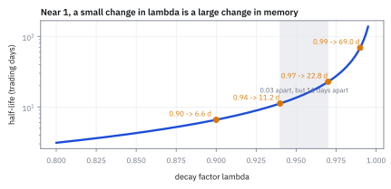

25.5 EWMA, the Kalman Filter, and GARCH as EWMA with an Offset
สูตรที่ทั้งอุตสาหกรรมใช้ มาจากแบบจำลองสองบรรทัดที่ง่ายที่สุดเท่าที่จะง่ายได้
วันนี้ตลาดร่วง −4% โต๊ะแรกใช้ exponentially weighted moving average (EWMA) โต๊ะที่สองใช้ Generalized Autoregressive Conditional Heteroskedasticity (GARCH) ทั้งคู่เคยตอบ 1.00% ต่อวัน ตอนนี้ตอบอะไร?
เฉลย: พรุ่งนี้ EWMA ตอบ 1.378% ส่วน GARCH ตอบ 1.523% ต่างกันไม่มาก แต่สำหรับอีก 60 วันข้างหน้า EWMA ยังตอบ 1.378% เท่าเดิมเป๊ะ ขณะที่ GARCH ตอบ 1.154% และกำลังเดินกลับไปหา 0.949% ความต่างทั้งหมดอยู่ที่ตัวเลขตัวเดียวในสูตร คือค่าคงที่ที่ GARCH บวกเข้าไปทุกวัน ซึ่ง EWMA ไม่มี
เริ่มจากสองโต๊ะที่ตอบเหมือนกันวันนี้ แต่คนละเรื่องในอีกสองเดือน
วันนี้ตลาดร่วง 4% โต๊ะแรกใช้ค่าเฉลี่ยถ่วงน้ำหนักแบบลดหลั่น โต๊ะที่สองใช้ GARCH ก่อนหน้านี้ทั้งคู่ตอบว่าความผันผวน 1.00% ต่อวันเท่ากัน
สำหรับพรุ่งนี้ ทั้งคู่ตอบใกล้กันคือ 1.378% กับ 1.523% ต่างกันไม่มาก แต่สำหรับอีก 60 วันข้างหน้า โต๊ะแรกยังตอบ 1.378% เท่าเดิมเป๊ะ ขณะที่โต๊ะที่สองตอบ 1.154% และกำลังเดินกลับไปหา 0.949%
ความต่างทั้งหมดอยู่ที่ตัวเลขตัวเดียวในสูตร คือค่าคงที่ที่ GARCH บวกเข้าไปทุกวันแต่อีกวิธีไม่มี ตัวนั้นทำให้มันมีระดับที่จะกลับไปหา หัวข้อนี้เรียงสามวิธีไว้ข้างกันจนเห็นว่ามันคือสูตรเดียวกันที่ต่างกันตรงพจน์เดียว
ศัพท์ที่ใช้ในหัวข้อนี้
- exponentially weighted moving average (EWMA)
- ค่าเฉลี่ยที่ให้น้ำหนักอดีตลดลงทีละคูณคงที่ ใช้เป็นสูตรมาตรฐานของ risk model เชิงพาณิชย์
- decay factor
- ตัวคูณ $\lambda$ ที่ยกยอดค่าประมาณเก่ามาวันนี้ ยิ่งใกล้ 1 ยิ่งจำนาน ใช้เป็น parameter เดียวของ EWMA
- half-life
- จำนวนวันที่น้ำหนักของข่าวหนึ่งหดเหลือครึ่งหนึ่ง ใช้สื่อสารความเร็วของแบบจำลองให้คนที่ไม่อยากดูสูตร
- state-space model
- แบบจำลองที่มีสถานะซึ่งมองไม่เห็น กับข้อมูลที่สังเกตได้ซึ่งเป็นสถานะบวกความคลาดเคลื่อน ใช้เป็นเหตุผลรองรับ EWMA
- Kalman filter
- สูตรที่ผสมค่าประมาณเก่ากับข้อมูลใหม่ด้วยน้ำหนักที่ดีที่สุดในความหมายกำลังสอง ใช้หาว่า $\lambda$ ควรเป็นเท่าไร
- Kalman gain
- น้ำหนัก K ที่ให้ข้อมูลใหม่ เท่ากับหนึ่งลบ decay factor ใช้เป็นตัวเชื่อมระหว่างสองภาษา
- Riccati equation
- สมการที่ความคลาดเคลื่อนของค่าประมาณต้องสอดคล้องกับตัวเองในสถานะนิ่ง ใช้หาค่า K
- Muth model
- แบบจำลองสถานะที่ง่ายที่สุด สถานะเดินแบบไม่มีความจำและสังเกตได้พร้อมความคลาดเคลื่อน ใช้เป็นที่มาของ EWMA
- Generalized Autoregressive Conditional Heteroskedasticity (GARCH)
- แบบจำลองที่ให้ variance วันนี้เท่ากับค่าคงที่บวก shock เมื่อวานบวก variance เมื่อวาน ใช้เป็นมาตรฐานเชิงวิชาการ รุ่นที่ใช้ในหัวข้อนี้คือ GARCH(1,1) ซึ่งมองย้อนหลังอย่างละหนึ่งงวด
- Integrated GARCH (IGARCH)
- GARCH ที่ผลรวมของสองน้ำหนักเท่ากับ 1 พอดี จึงไม่มีค่าระยะยาวให้กลับ ใช้เรียก EWMA ในภาษาของ GARCH
- persistence
- สัดส่วนของความปั่นป่วนเมื่อวานที่ยกยอดมาถึงวันนี้ ใช้หาว่า shock จะอยู่นานแค่ไหน
- mean reversion
- แนวโน้มที่ค่าจะเดินกลับหาระดับปกติของมัน ใช้เป็นเหตุผลว่าทำไมความผันผวนไม่ระเบิดไปเรื่อย ๆ
- long-run variance
- ระดับที่ variance เดินกลับไปหาเมื่อไม่มีข่าวใหม่ ใช้เป็นจุดยึดของการพยากรณ์ระยะยาว
- Harvey-Shephard model
- แบบจำลองสถานะที่ใช้ logarithm ของผลตอบแทนกำลังสองเป็นข้อมูลที่สังเกต ทำให้ความผันผวนเป็นบวกเสมอโดยอัตโนมัติ
- RiskMetrics
- ชุดวิธีคำนวณความเสี่ยงที่ J.P. Morgan เผยแพร่ในปี 1994 ใช้เป็นที่มาของค่า 0.94 ที่คนใช้กันจนติด
สัญลักษณ์ที่ใช้ในหัวข้อนี้
| สัญลักษณ์ | ความหมาย | หน่วย |
|---|---|---|
| $r_t$ | ผลตอบแทนส่วนเกินรายวัน วัน t | decimal ต่อวัน |
| $\hat\sigma_t^2$ | variance ที่พยากรณ์ไว้สำหรับวัน t | decimal² |
| $\lambda$ | decay factor น้ำหนักที่ยกยอดค่าประมาณเก่ามา | unitless |
| $K$ | Kalman gain น้ำหนักที่ให้ข้อมูลใหม่ เท่ากับ $1-\lambda$ | unitless |
| $h$ | half-life จำนวนวันที่น้ำหนักหดเหลือครึ่ง | วันทำการ |
| $x_t$ | สถานะที่มองไม่เห็น ในที่นี้คือ variance จริง | decimal² |
| $y_t$ | ข้อมูลที่สังเกตได้ ในที่นี้คือ $r_t^2$ | decimal² |
| $\tau_\epsilon,\ \tau_\eta$ | ขนาดการเปลี่ยนของสถานะ และขนาดความคลาดเคลื่อนของการสังเกต | decimal² |
| $\kappa$ | อัตราส่วน $\tau_\eta/\tau_\epsilon$ เสียงรบกวนต่อการเปลี่ยนจริง | unitless |
| $a$ | ตัวคูณของสถานะ เท่ากับ 1 เมื่อไม่มี mean reversion | unitless |
| $\alpha_0,\alpha_1,\beta_1$ | parameter ของ GARCH(1,1) | decimal² และ unitless |
| $V$ | long-run variance ของ GARCH | decimal² |
โจทย์: สองโต๊ะ วันเดียวกัน คำตอบต่างกัน
โจทย์ให้อะไรมาบ้าง สองโต๊ะพยากรณ์ความผันผวนของเมื่อวานไว้เท่ากันที่ 1.00% ต่อวัน วันนี้ตลาดร่วง −4% ถือว่าค่าเฉลี่ยรายวันเป็นศูนย์ shock จึงเท่ากับผลตอบแทน โต๊ะแรกใช้ EWMA ที่ λ = 0.94 ซึ่งเป็นค่าที่ RiskMetrics เผยแพร่ในปี 1994 และคนใช้กันจนติด โต๊ะที่สองใช้ GARCH(1,1) ที่ ω = 1.8 × 10⁻⁶ α₁ = 0.09 β₁ = 0.89
ต้องหาห้าอย่าง half-life ของ EWMA คำพยากรณ์ของทั้งสองสำหรับพรุ่งนี้ คำพยากรณ์สำหรับ 60 วันข้างหน้า เงื่อนไขที่ทำให้ทั้งสองเป็นแบบจำลองเดียวกัน และค่า κ ที่ทำให้ Kalman filter เลือก λ = 0.94 ออกมาเอง
ขั้นที่ 1 — EWMA และ half-life ของมัน
นี่คือนิยามของ EWMA เขียนทั้งแบบเวียนเกิดและแบบคลี่ออก สองรูปนี้คือสิ่งเดียวกัน ได้จากการแทนค่าตัวเองซ้ำ ๆ แล้วเก็บพจน์
รูปที่คลี่ออกบอกสิ่งที่รูปเวียนเกิดซ่อนไว้ variance วันนี้คือค่าเฉลี่ยถ่วงน้ำหนักของ shock ทุกวันในอดีต โดยน้ำหนักลดลง 6% ต่อวัน ไม่มีวันไหนหลุดออกไปแบบกระทันหัน ต่างจากหน้าต่าง 20 วันที่ข่าวของวันที่ 21 หายวับไปทั้งก้อน
half-life 11.2 วันเป็นวิธีสื่อสารที่ดีกว่าบอกว่า λ = 0.94 ถ้าบอกผู้บริหารว่า “แบบจำลองลืมครึ่งหนึ่งของข่าวภายในสองสัปดาห์ครึ่ง” ทุกคนเข้าใจทันที
ขั้นที่ 2 — พรุ่งนี้: ทั้งสองโต๊ะตอบเท่าไร
แทนตัวเลขของโจทย์ลงในสูตรของแต่ละโต๊ะ ทั้งสองเริ่มจากจุดเดียวกันและเห็นข่าวเดียวกัน ต่างกันแค่น้ำหนักที่ให้ข่าวนั้น
GARCH ตอบสูงกว่าเพราะน้ำหนักที่ให้ข่าวใหม่คือ 0.09 ไม่ใช่ 0.06 ข่าวเดียวกันจึงถูกขยายมากกว่าครึ่งเท่า ส่วนตัว ω ที่ 1.8 × 10⁻⁶ แทบไม่มีผลต่อคำตอบของพรุ่งนี้ มันเล็กกว่าพจน์อื่นเกือบร้อยเท่า
ตรวจเองใน 10 วินาที ทั้งสองต้องอยู่ระหว่าง 1.00% ซึ่งคือค่าเก่า กับ 4.00% ซึ่งคือข่าวใหม่ และต้องอยู่ค่อนไปทางค่าเก่ามาก เพราะน้ำหนักของค่าเก่าคือ 0.94 กับ 0.89 ตัวเลข 1.38% และ 1.53% ผ่านทั้งสองข้อ
ขั้นที่ 3 — อีกหกสิบวัน: ตรงนี้ที่ทั้งสองแยกทางกัน
เดินคำพยากรณ์ไปข้างหน้าโดยไม่มีข่าวใหม่ คือแทน $r^2$ ด้วยค่าที่คาดว่าจะเป็นโดยเฉลี่ย ซึ่งก็คือ variance ของวันนั้นเอง ทำแบบนั้นกับทั้งสองสูตรแล้วดูว่าเกิดอะไรขึ้น
บรรทัดแรกคือเรื่องทั้งหมด น้ำหนักของ EWMA บวกกันได้ 1 พอดี คำพยากรณ์ของวันพรุ่งนี้จึงเท่ากับคำพยากรณ์ของวันนี้เป๊ะ ๆ และเท่ากันไปตลอด EWMA ไม่มีความเห็นเรื่องอนาคตไกล มันบอกได้แค่ว่าตอนนี้เป็นอย่างไร
GARCH มีค่าคงที่ ω บวกเข้าไปทุกวัน ผลรวมของน้ำหนักจึงเป็น 0.98 ไม่ใช่ 1 คำพยากรณ์จึงหดเข้าหา V ด้วยอัตรา 2% ต่อวัน ครึ่งทางที่ 34.3 วัน
แปลว่าอะไรบนโต๊ะ ถ้าต้องตอบว่า “ควรลดพอร์ตเท่าไรวันนี้” ทั้งสองให้คำตอบใกล้กัน แต่ถ้าต้องตอบว่า “อีกสามเดือนจะกลับมาเต็มขนาดได้ไหม” EWMA ตอบไม่ได้เลย เพราะมันบอกว่าความปั่นป่วนจะอยู่ตลอดไป
Figure 25.5a — ข่าวเดียวกัน คำพยากรณ์พรุ่งนี้ใกล้กัน แต่เส้นทางข้างหน้าคนละเรื่อง

แกนนอนคือจำนวนวันข้างหน้านับจากวันที่ตลาดร่วง −4% แกนตั้งคือความผันผวนที่พยากรณ์ไว้ เส้นแบนคือ EWMA ซึ่งค้างที่ 1.378% ตลอดไป เส้นที่โค้งลงคือ GARCH ซึ่งเดินกลับหา 0.949% ด้วย half-life 34.3 วัน จุดเริ่มต้นของทั้งสองห่างกันแค่ 0.15 จุด แต่ที่ 60 วันห่างกัน 0.22 จุดในทางตรงข้าม
ขั้นที่ 4 — เงื่อนไขที่ทำให้ทั้งสองเป็นตัวเดียวกัน
คลี่สูตร GARCH ออกแบบเดียวกับที่คลี่ EWMA ในขั้นที่ 1 คือแทนค่าตัวเองซ้ำ ๆ แล้ววางสองผลลัพธ์ข้างกัน ความเหมือนจะโผล่ออกมาทันที
สองบรรทัดบนต่างกันแค่ก้อนแรก ที่เหลือมีรูปเดียวกันทุกประการ EWMA จึงคือ GARCH ที่ตั้งค่าคงที่เป็นศูนย์ และเมื่อค่าคงที่เป็นศูนย์ ผลรวมของน้ำหนักต้องเป็น 1 ไม่อย่างนั้นค่าประมาณจะไหลไปหาศูนย์หรือหาอนันต์
ในภาษาของ GARCH แบบจำลองที่ผลรวมเป็น 1 พอดีเรียกว่า Integrated GARCH ซึ่งเป็นที่รู้กันว่าไม่มีค่าระยะยาว นั่นคือ EWMA ในอีกชื่อหนึ่ง คนที่ใช้ EWMA ทุกวันจึงกำลังใช้ Integrated GARCH โดยไม่รู้ตัว
แล้วทำไมคนทำงานจริงยังเลือก EWMA ทั้งที่ GARCH ดีกว่าในแง่นี้ เหตุผลคือความเรียบง่าย EWMA มี parameter ตัวเดียวและมักใช้ค่าเดียวกันกับหุ้นทุกตัว ส่วน GARCH ต้องประมาณสามค่าต่อหุ้นหนึ่งตัว คูณด้วยสามพันตัวคือเก้าพันค่า ที่ต้องดูแล ตรวจสอบ และอธิบายให้ลูกค้าฟัง ผลที่ดีขึ้นมักไม่คุ้มกับต้นทุนตรงนั้น
Figure 25.5b — น้ำหนักที่แต่ละวิธีให้กับข่าวเก่า

แกนนอนคือจำนวนวันที่ผ่านไปนับจากวันที่ข่าวเกิด แกนตั้งคือน้ำหนักของข่าวนั้นใน variance ของวันนี้ EWMA และ GARCH ต่างจางลงอย่างราบรื่น โดย GARCH เริ่มสูงกว่าแต่จางเร็วกว่า ส่วนหน้าต่าง 20 วันให้น้ำหนักเท่ากันหมดแล้วตัดทิ้งทั้งก้อนในวันที่ 21
แล้วเอาไปใช้ทำอะไรได้จริงบ้าง
ถึงตรงนี้ EWMA ยังดูเหมือนสูตรที่คนเลือกใช้เพราะสะดวก คำถามที่ควรถามคือ มีแบบจำลองไหนที่บอกว่า EWMA คือคำตอบที่ถูกต้อง ไม่ใช่แค่คำตอบที่สะดวก คำตอบคือมี และเป็นแบบจำลองเดียวกับที่ใช้ในหัวข้อ 25.3
เรื่องนี้สำคัญบนโต๊ะจริง เพราะถ้ารู้ว่า λ มาจากไหน ก็จะรู้ว่าควรเปลี่ยนมันเมื่อไร แทนที่จะใช้ 0.94 ไปตลอดเพราะเอกสารปี 1994 บอกไว้อย่างนั้น
ขั้นที่ 5 — แบบจำลองที่ทำให้ EWMA เป็นคำตอบที่ถูก
นี่คือนิยามของแบบจำลองสถานะที่ง่ายที่สุดเท่าที่จะง่ายได้ สถานะคือ variance จริงซึ่งเดินแบบไม่มีความจำ ส่วนสิ่งที่สังเกตได้คือ $r_t^2$ ซึ่งเท่ากับ variance ของวันนั้นโดยเฉลี่ย แต่คลาดเคลื่อนไปมาก เพราะกำลังสองของก้อนสุ่มหนึ่งตัวเป็นตัวเลขที่เหวี่ยงมาก
บรรทัดสุดท้ายคือ EWMA ทุกตัวอักษร โดยที่ $1-K$ คือ $\lambda$ นี่คือคำตอบของคำถามที่ตั้งไว้ EWMA ไม่ใช่สูตรที่หยิบมาใช้เพราะสะดวก มันคือค่าประมาณที่ดีที่สุดในความหมายกำลังสอง เมื่อสิ่งที่เราอยากรู้เดินแบบไม่มีความจำและเราเห็นมันพร้อมความคลาดเคลื่อน
แก้ย้อนกลับได้ด้วย ถ้าอยากได้ K = 0.06 ซึ่งคือ λ = 0.94 ต้องมี κ = 16.16 แปลว่าความคลาดเคลื่อนของ $r^2$ ต้องดังกว่าการเปลี่ยนแปลงจริงของ variance ราว 16 เท่า ซึ่งฟังดูสมเหตุสมผลมากสำหรับ $r^2$ ที่เหวี่ยงแรงอย่างที่รู้กัน
เมื่อ κ ใหญ่มาก สูตรง่ายลงเหลือ $K\approx 1/(\kappa+1)$ ที่ κ = 16.16 สูตรลัดให้ 0.0583 เทียบกับค่าจริง 0.0600 ผิด 3% ซึ่งพอสำหรับการคิดในหัว
ขั้นที่ 6 — เติม mean reversion แล้วเกิดอะไรขึ้น
แบบจำลองในขั้นที่ 5 มีปัญหาหนึ่ง มันปล่อยให้ variance เดินไปไหนก็ได้ ซึ่งขัดกับข้อเท็จจริงที่ว่าความผันผวนกลับหาระดับปกติเสมอ เติมพจน์ที่ดึงกลับเข้าไป แล้วคิด K ใหม่
ผลลัพธ์นี้สวนสัญชาตญาณของคนส่วนใหญ่ ยิ่งความผันผวนกลับหาค่าปกติเร็ว ยิ่งควรมอง ย้อนหลัง นาน ขึ้น ไม่ใช่สั้นลง
เหตุผลอ่านได้ตรง ๆ mean reversion บีบให้ค่าจริงเกาะกลุ่มอยู่รอบค่าปกติ ข้อมูลเก่าจึงยังบอกอะไรเกี่ยวกับวันนี้ได้อยู่ ต่างจากกรณีที่ค่าจริงเดินหนีไปเรื่อย ๆ ซึ่งข้อมูลเมื่อสองเดือนก่อนกลายเป็นเรื่องของค่าคนละตัว
ข้อนี้ใช้ตัดสินใจได้จริง ถ้าเชื่อว่าความผันผวนของสินทรัพย์กลุ่มหนึ่งกลับหาค่าปกติเร็ว เช่นสินค้าโภคภัณฑ์บางตัว ก็ควรใช้ half-life ยาวกว่าหุ้น ไม่ใช่สั้นกว่า
Figure 25.5c — น้ำหนักที่ให้ข่าวใหม่ ลดลงทั้งเมื่อเสียงรบกวนดังและเมื่อมี mean reversion

แกนนอนคืออัตราส่วนเสียงรบกวนต่อการเปลี่ยนจริง แกนตั้งคือน้ำหนักที่ให้ข่าวใหม่ เส้นบนสุดคือกรณีไม่มี mean reversion เส้นล่าง ๆ คือกรณีที่มี mean reversion แรงขึ้นเรื่อย ๆ จุดที่ทำเครื่องหมายคือค่าที่ให้ λ = 0.94 พอดี
Figure 25.5d — half-life กับ decay factor: ตัวเลขที่ควรใช้คุยกับคน

แกนนอนคือ decay factor แกนตั้งคือ half-life เป็นวันทำการ บนสเกล logarithm ความชันที่สูงมากใกล้ 1 คือเหตุผลที่ต้องระวัง ระหว่าง 0.94 กับ 0.97 ต่างกันแค่ 0.03 แต่ half-life กระโดดจาก 11 วันเป็น 23 วัน
กับดัก: ใช้ EWMA พยากรณ์ระยะยาว และปรับ λ ตามผลที่อยากได้
กับดักแรกคือใช้ EWMA ตอบคำถามที่มันตอบไม่ได้ ถ้าถูกถามว่า “ความผันผวนอีกหกเดือนจะเป็นเท่าไร” EWMA จะตอบค่าของวันนี้ ซึ่งในวันที่เพิ่งเกิดวิกฤตจะเป็นการบอกว่าวิกฤตจะอยู่ตลอดไป สำหรับการตั้งราคา option ระยะยาวหรือการวางแผนทุน ต้องใช้แบบจำลองที่มีค่าระยะยาว
กับดักที่สองคือปรับ λ จนกว่าผลการทดสอบย้อนหลังจะสวย λ เป็น parameter ที่ควรมาจากคุณสมบัติของข้อมูล คือ κ และความเร็วของ mean reversion ไม่ใช่มาจากผลลัพธ์ที่อยากเห็น ขั้นที่ 5 และ 6 ให้วิธีเลือกที่มีเหตุผลรองรับ ใช้มันแทน
กับดักที่สามคือแบบจำลองในขั้นที่ 5 ยอมให้ variance ติดลบได้ เพราะสถานะเดินแบบบวกลบอิสระ ในทางปฏิบัติมันไม่เคยเกิดเพราะ K เล็กและข้อมูลเป็นบวกเสมอ แต่ถ้าอยากให้ถูกต้องตั้งแต่ต้น ให้ใช้ logarithm ของ $r^2$ เป็นข้อมูลที่สังเกตแทน ซึ่งเป็นสิ่งที่แบบจำลองของ Harvey กับ Shephard ทำ ความผันผวนที่ได้จะเป็นบวกเสมอและเบ้ขวา ซึ่งตรงกับข้อมูลจริงมากกว่า
ที่มาที่ไป: สูตรที่ทุกคนใช้ แต่ไม่ค่อยมีใครบอกว่ามาจากไหน
ผู้ให้บริการ risk model เชิงพาณิชย์แทบทุกเจ้าใช้ EWMA ขณะที่วารสารวิชาการเต็มไปด้วย GARCH ความแตกต่างนี้ดูเหมือนเรื่องรสนิยม แต่มันไม่ใช่
ในหัวข้อ 25.3 เราเจอแบบจำลองสองสมการที่แยกสิ่งที่อยากรู้ออกจากสิ่งที่วัดได้ และได้สูตรผสมค่าเก่ากับค่าใหม่ออกมา คราวนี้เราเอาแบบจำลองเดียวกันนั้นมาใช้กับ variance แทนราคา สิ่งที่หล่นออกมาคือ EWMA เป๊ะ ๆ
แล้ว GARCH ล่ะ ปรากฏว่าเมื่อคลี่สมการของ GARCH ออก มันคือ EWMA บวกค่าคงที่ตัวเดียว และค่าคงที่ตัวนั้นคือทั้งหมดที่แยกแบบจำลองที่มีบ้านให้กลับ ออกจากแบบจำลองที่ไม่มี
ข้อจำกัด: เลือกอันไหนดี
| เรื่อง | EWMA | GARCH(1,1) | ควรเลือกอย่างไร |
|---|---|---|---|
| จำนวน parameter ต่อหุ้น | ศูนย์ ใช้ค่ากลางร่วมกันได้ | สามค่า ต้องประมาณแยก | จักรวาลสามพันตัว EWMA ชนะเรื่องการดูแลอย่างเด็ดขาด |
| พยากรณ์พรุ่งนี้ | ดี | ดีกว่าเล็กน้อย | ต่างกันไม่พอที่จะเปลี่ยนการตัดสินใจรายวัน |
| พยากรณ์หลายเดือน | ใช้ไม่ได้ ตอบค่าเดิมตลอด | ใช้ได้ มีค่าระยะยาว | งานตั้งราคา option และวางแผนทุน ต้อง GARCH หรือดีกว่านั้น |
| อธิบายให้ลูกค้าฟัง | ง่าย บอก half-life จบ | ยาก ต้องอธิบายสามตัว | ผู้ให้บริการเชิงพาณิชย์เลือก EWMA ด้วยเหตุผลนี้เป็นหลัก |
| ข่าวดีกับข่าวร้าย | เท่ากัน | เท่ากัน | ทั้งคู่พลาด ต้องใช้รุ่นที่แยกเครื่องหมายถ้าเรื่องนี้สำคัญ |
แถวที่สามคือเหตุผลที่หัวข้อ 27.3 ต้องมีกลไกเพิ่มเติมสำหรับการตอบสนองระยะสั้น ไม่ว่าจะเลือกอันไหนในตารางนี้ ทั้งคู่ตามการเปลี่ยนภาวะไม่ทันด้วยตัวมันเอง
ตรวจทุกตัวเลขของหัวข้อนี้
import numpy as np
from scipy.optimize import brentq
lam, s_prev, shock = 0.94, 0.01, -0.04
w, a1, b1 = 1.8e-6, 0.09, 0.89
# step 1: the half-life
h = -np.log(2) / np.log(lam)
assert abs(h - 11.2023) < 1e-4
wts = (1 - lam) * lam ** np.arange(0, 4000)
assert abs(wts.sum() - 1.0) < 1e-9 # EWMA weights sum to one
assert abs(wts[:12].sum() - 0.5197) < 1e-4 # half the weight in 12 days
# step 2: tomorrow
ve = (1 - lam) * shock ** 2 + lam * s_prev ** 2
vg = w + a1 * shock ** 2 + b1 * s_prev ** 2
assert abs(ve - 0.00019) < 1e-12 and abs(np.sqrt(ve) * 100 - 1.37840) < 1e-5
assert abs(vg - 0.0002348) < 1e-12 and abs(np.sqrt(vg) * 100 - 1.53232) < 1e-5
assert s_prev < np.sqrt(ve) < np.sqrt(vg) < abs(shock) # both sit between old and news
# step 3: the two forecast paths
V = w / (1 - a1 - b1)
assert abs(V - 9e-5) < 1e-15
assert abs(np.sqrt(V) * 100 - 0.94868) < 1e-5
assert abs(np.sqrt(V * 251) * 100 - 15.0297) < 1e-4
fe = [ve]
fg = [vg]
for _ in range(60):
fe.append((1 - lam) * fe[-1] + lam * fe[-1]) # EWMA: nothing changes
fg.append(w + (a1 + b1) * fg[-1])
assert all(abs(x - ve) < 1e-18 for x in fe) # dead flat, forever
assert np.allclose([np.sqrt(fg[k]) * 100 for k in (1, 5, 20, 60)],
[1.52283, 1.48617, 1.36627, 1.15364], atol=1e-5)
assert all(abs(fg[k] - (V + (a1 + b1) ** k * (vg - V))) < 1e-18 for k in range(61))
assert abs(np.log(0.5) / np.log(a1 + b1) - 34.31) < 0.01
# step 4: GARCH IS EWMA when the offset is zero
n = 3000
r2 = np.random.default_rng(1).chisquare(1, n) * 1e-4
def garch(a0, a1_, b1_):
v = 1e-4
for x in r2:
v = a0 + a1_ * x + b1_ * v
return v
def ewma(l):
v = 1e-4
for x in r2:
v = (1 - l) * x + l * v
return v
assert abs(garch(0.0, 1 - lam, lam) - ewma(lam)) < 1e-18 # identical, to the last bit
assert abs((1 - lam) + lam - 1.0) < 1e-15 # which makes it an IGARCH
# steps 5-6: the state-space model that produces EWMA
def gain(kappa, a=1.0):
te, tn = 1.0, kappa
A = (a * a - 1) * tn ** 2 + te ** 2
s2 = 0.5 * (A + np.sqrt(A * A + 4 * tn ** 2 * te ** 2))
return s2 / (s2 + tn ** 2)
assert abs(gain(0.46875) - 0.84362) < 1e-5 # the 25.3 answer, same formula
k = brentq(lambda kk: gain(kk) - 0.06, 0.1, 200)
assert abs(k - 16.1589) < 1e-3 and abs(gain(k) - 0.06) < 1e-9
assert abs(1 / (k + 1) - 0.058279) < 1e-6 # the mental shortcut
for a, K, hl in ((1.00, 0.0600, 11.2), (0.95, 0.0299, 22.9),
(0.90, 0.0184, 37.4), (0.80, 0.0103, 66.7)):
g = gain(k, a)
assert abs(g - K) < 5e-5
assert abs(-np.log(2) / np.log(1 - g) - hl) < 0.05
assert all(gain(k, a) > gain(k, a - 0.05) for a in (1.0, 0.95, 0.90)) # slower state, longer memoryบล็อกของขั้นที่ 4 ไม่ได้เชื่อพีชคณิต แต่รัน GARCH กับ EWMA บนข้อมูลชุดเดียวกัน 3,000 วันแล้วเทียบผลลัพธ์ ได้ค่าตรงกันถึงหลักสุดท้าย และบรรทัดแรกของขั้นที่ 5 ยืนยันว่าสูตรเดียวกันนี้ให้คำตอบ 0.844 ของหัวข้อ 25.3 กลับมา
ก่อนไปต่อ — จบบทที่ 25
ตอนนี้เรามีผลตอบแทนที่สะอาด รู้ว่ามันมีนิสัยอย่างไร รู้ว่าราคาที่วัดได้คลาดเคลื่อนแค่ไหน วัดความผันผวนได้ และเดินมันไปข้างหน้าได้ ทั้งหมดนี้ยังเป็นเรื่องของหุ้นตัวเดียว
บทถัดไปเปลี่ยนไปที่หุ้นสามพันตัวพร้อมกัน ซึ่งไม่ใช่แค่ทำสิ่งเดิมสามพันครั้ง เพราะสิ่งที่สำคัญที่สุดคือหุ้นเหล่านั้นเคลื่อนไหวพร้อมกัน และโครงสร้างของการเคลื่อนไหวพร้อมกันนั้นคือหัวใจของทั้ง Part
สรุปที่ใช้ได้จริง
- EWMA มี parameter ตัวเดียวคือ λ และวิธีสื่อสารที่ดีที่สุดคือ half-life ที่ λ = 0.94 คือ 11.2 วันทำการ
- หลังวันที่ร่วง −4% EWMA ตอบ 1.378% ส่วน GARCH ตอบ 1.523% ต่างกันไม่มาก แต่ที่ 60 วันข้างหน้า EWMA ยังตอบ 1.378% เท่าเดิม ขณะที่ GARCH ตอบ 1.154% และกำลังกลับไปหา 0.949%
- คลี่สมการออกแล้ว GARCH คือ EWMA บวกค่าคงที่ตัวเดียว ทั้งสองเป็นตัวเดียวกันเมื่อ $\alpha_0=0$, $\alpha_1=1-\lambda$, $\beta_1=\lambda$ ซึ่งทำให้ผลรวมของน้ำหนักเป็น 1 พอดี และนั่นคือเหตุผลที่ EWMA ไม่มีค่าระยะยาว
- EWMA ไม่ใช่สูตรที่หยิบมาใช้เพราะสะดวก มันคือค่าประมาณที่ดีที่สุดเมื่อสิ่งที่อยากรู้เดินแบบไม่มีความจำและเห็นได้พร้อมความคลาดเคลื่อน ค่า λ = 0.94 ตรงกับเสียงรบกวนที่ดังกว่าการเปลี่ยนจริง 16 เท่า
- ยิ่งมี mean reversion แรง ยิ่งควรมองย้อนหลังนานขึ้น ที่ a = 0.95 half-life ยืดจาก 11.2 เป็น 22.9 วัน เพราะข้อมูลเก่ายังบอกอะไรได้อยู่เมื่อค่าจริงไม่เดินหนีไปไหน